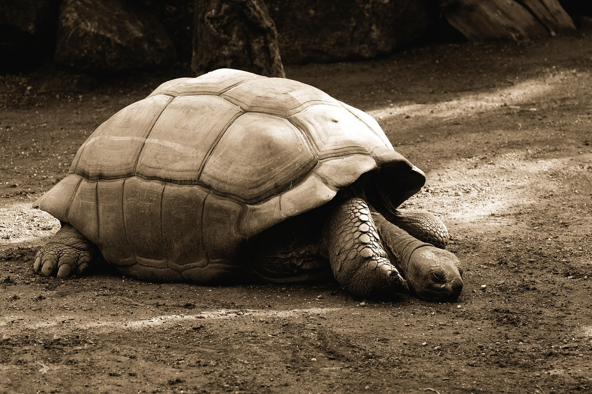
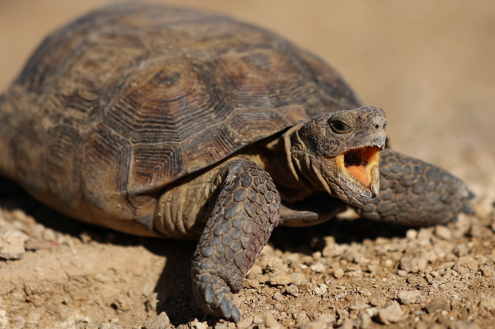

거북이 설명
(사진 위 마우스 호버)


파충류에 속하는 동물로, 그중 육지거북은 땅에서 생활하는 땅거북과로 분류된다.
모든 종이 평생을 육지에서 살아가며, 헤엄을 잘 치지 못한다.
다 자라면 덩치가 커 천적이 많이 없고,
(한번 뒤집어지면 스스로의 힘으로 못 뒤집고 죽는 경우도 있다.)
관리해주긴 힘들지만 육지 거북을 반려 거북으로 선호하는 사람들도 꽤 존재한다.
육지 거북이들은 채식 동물이기 때문에 잎, 꽃, 열매 등 다양한 식물성 먹이를 섭취한다.
그러나 수분이 많은 채소나 과일들은 요산 배출을 증가시켜 수분중독이 올 수 있고
영양소가 없는 경우가 많기 때문에 주식으로 채겨주는 것은 피하는 게 좋다.